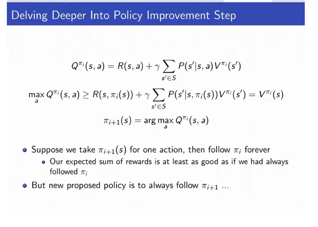
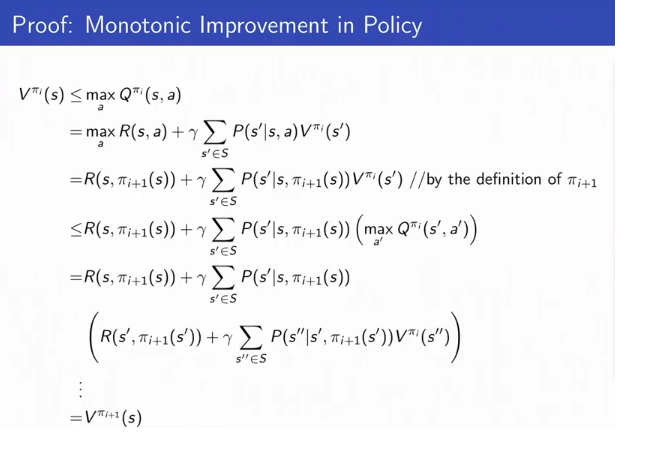
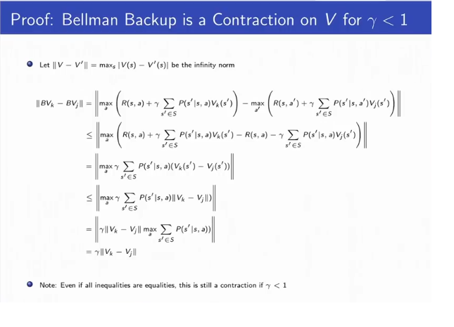

2.1 Types of Markov Processes
Def: A state has the Markov property if and only if: p(st+1|st,at)=p(st+1|ht,at)
Markov Processes
Def: A Markov Process is a double (S,P), with a finite set S of states, and P, a transition model specifying p(st+1=s′|st=s)
If the state space is finite, P can be expressed as a matrix of transition probabilities.
Markov Reward Process:
Def: A Markov Reward Process is a quadruple (S,P,R,γ), with a finite set S of states, and P, a transition model specifying p(st+1=s′|st=s), and R, a reward function R(st=s)=𝔼[rt|st=s]. Rewards are discounted by a discount factor γ.
Def: The return is the discounted sum or rewards.
Def: The value function of a state is the expected of the return of a state. You can estimate the value of a state by simulation.
Def: The Bellman equation states that V(s)=R(s)+γ∑s′∈SP(s′|s)V(s′). This is used for policy evaluation.
Markov Decision Process (MDP):
Def: A Markov Decision Process a tuple (S,A,R,P,γ) with finite set S of states, a finite set A of actions, and P, a transition model from each action and each state specifying p(st+1=s′|st=s,at=a), and R, a reward function R(st=s,at=a)=𝔼[rt|st=s]. Rewards are discounted by a discount factor γ.
Def: A MDP policy is a conditional distribution over actions π(a|s)=P(at=a|st=s) specifying what action to take in each state. Note that an MDP + a policy π(a|s) is simply a Markov Reward Process.
- Def: stationary policies only depend on the current state, that is, we can parameterize it π(a|s).
- Def: nonstationary policies depend on the timestep as well as the current state. We just parameterize it π(at|st,t)
Def: The Q-value of a policy π given state s and action a is the value of the policy applied after folloing action a from state s: Qπ(s,a)=R(s,a)+γ∑s′∈SP(s′|s)Vπ(s′).
Operators:
Def: The Bellman backup operator B is an operator using the Bellman equation applied to the value function to improve its value over all states s (note the max, and note that BV(s) is not a function but the operator B applied to the function V(s)).
BV(s)=maxa⎡⎣⎢⎢R(s,a)+γ∑s′∈Sp(s′|s,a)V(s′)⎤⎦⎥⎥
Given a particular policy π, the Bellman backup operator Bπ is defined as:
BπV(s)=Rπ(s)+γ∑s′∈SPπ(s′|s)V(s)
To evaluate the value of a policy π, we can essentially just run BπBπBπ⋯BπV0 - that is, finding a fixed point of Bπ.
Def: Contracton operator: Let O be an operator and let |x| be any norm of x.
If for some functions V,V′, we have |OV−OV′|≤|V−V′|, then O is a contraction operator.
2.2 Model-Based MDP Problems
Policy Evaluation (Computing the Value of a Given Policy):
Def: Policy Evaluation is computing the value of a given policy for every state. There are two model-based approaches to policy evaluation.
- Analytic Solution (Model Based): Recall the Bellman Equation states V(s)=R(s)+γ∑s′∈SP(s′|s)V(s′). For finite MDP with state space size N, this is expressed in matrix form as V=R+γPV⟹V=(I−γP)−1R. Solving analytically takes O(N3) time.
- Iterative Solution using DP (Model Based):
- Run BπBπBπ⋯BπV0, that is, finding a fixed point of Bπ:
For k=1... until convergence:
...For s in S:
......Vk(s)=Rπ(s)+γ∑s′∈SPπ(s′|s)Vk−1(s′)
(Computational Complexity O(N2).)
(See Lecture 3 for Exposition of Model Free Policy Evaluation)
- Simulation Solution (Model Free)- One can also solve for the value function by simulating different outcomes from a given state taking a particular policy.
The MDP Control Problem (Computing the optimal policy)
Def: The MDP control problem is the computation of the optimal policy: π∗(s)=argmaxVπ(s).
There always exists a unique optimal value function and one or more optimal policies that achieve that function. The optimal policies for a MDP in an infinite horizon problem is deterministic (not stochastic) and independent of time step (stationary).
- We often find the optimal policy through Policy iteration, which updates a policy by changing the next action to be the maximizer of the value given we follow the old policy for all future actions. Its not immediately intuitive why this should lead to the optimal policy, but it does. (Proof in Appendix 1). Policy iteration is equivalent to iterating policy evaluation to upate the value of the current policy, then policy imporvemnt to generate the next policy given the current policy.
- Loop Until Converenge:
- Policy Evaluation:
- Compute the value of the current policy Vπi(s)=Rπi(s)+γ∑s′∈SPπi(s′|s)Vπi−1(s′)
- Policy Improvement:
- Another approach is value iteration. Idea: Maintain optimal value of starting in a state s if there is a finite number of steps k left in the episode, iterate to consider longer and longer episodes.
- Essentially it iteratively applies the Bellman Backup Operator Vk+1=BVk until converence, so value iteration is equivalently V∗=BBB⋯BV0.
- Loop until convergence:
- This converges because the Bellman backup operator is a contraction if γ<1 (Proof in Appendix 2).
Note: Value Iteration and Policy Iteration are exactly the same, except the former only updates the state-value function (V), and the latter updates the state-action value function (Q). They result in the same value function at convergence. V(s) is the max of the Qs over all possible actions a from state s.
Appendix 1: Proof of Policy Iteration
A Proof that policy iteration leads to monotonic improvement and converges.

So a justification is required. In fact, we can telescope the substitution many times, and each time the inequality is ≤.

Because policy iteration monotonically increases the value function, and becuase the number of states is finite, it always converges.
Appendix 2: Proof that Bellman Operator is a Contraction Operator:
